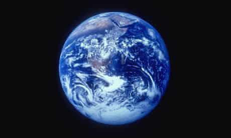

An earthquake (also known as a quake, tremor or temblor) is the shaking of the surface of the Earth, resulting from the sudden release of energy in the Earth's lithosphere that creates seismic waves. Earthquakes can range in size from those that are so weak that they cannot be felt to those violent enough to toss people around and destroy whole cities. The seismicity, or seismic activity, of an area is the frequency, type and size of earthquakes experienced over a period of time. The word tremor is also used for non-earthquake seismic rumbling. Source: https://en.wikipedia.org/wiki/Sense
Humans have a multitude of sensors.
Sight (vision, visual sense), hearing (audition, auditory sense), taste (gustation, gustatory sense), smell (olfaction, olfactory sense), and touch (somatosensation, somatosensory sense) are the five traditionally recognized senses. The ability to detect other stimuli beyond those governed by these most broadly recognized senses also exists, and these sensory modalities include temperature (thermoception), kinesthetic sense (proprioception), pain (nociception), balance (equilibrioception), vibration (mechanoreception), and various internal stimuli (e.g. the different chemoreceptors for detecting salt and carbon dioxide concentrations in the blood, or sense of hunger and sense of thirst). However, what constitutes a sense is a matter of some debate, leading to difficulties in defining what exactly a distinct sense is, and where the borders lie between responses to related stimuli.
Source:https://en.wikipedia.org/wiki/Sense
Sight
or vision (adjectival form: visual/optical) is the capability of the eye(s) to focus and detect images of visible light on photoreceptors in the retina of each eye that generates electrical nerve impulses for varying colors, hues, and brightness. There are two types of photoreceptors: rods and cones. Rods are very sensitive to light but do not distinguish colors. Cones distinguish colors but are less sensitive to dim light. There is some disagreement as to whether this constitutes one, two or three senses. Neuroanatomists generally regard it as two senses, given that different receptors are responsible for the perception of color and brightness. Some argue that stereopsis, the perception of depth using both eyes, also constitutes a sense, but it is generally regarded as a cognitive (that is, post-sensory) function of the visual cortex of the brain where patterns and objects in images are recognized and interpreted based on previously learned information. This is called visual memory.
Source:https://en.wikipedia.org/wiki/Sense
Hearing
or audition (adjectival form: auditory) is the sense of sound perception. Hearing is all about vibration. Mechanoreceptors turn motion into electrical nerve pulses, which are located in the inner ear. Since sound is vibration, propagating through a medium such as air, the detection of these vibrations, that is the sense of the hearing, is a mechanical sense because these vibrations are mechanically conducted from the eardrum through a series of tiny bones to hair-like fibers in the inner ear, which detect mechanical motion of the fibers within a range of about 20 to 20,000 hertz,[6] with substantial variation between individuals. Hearing at high frequencies declines with an increase in age. Inability to hear is called deafness or hearing impairment. Sound can also be detected as vibrations conducted through the body by tactition. Lower frequencies that can be heard are detected this way. Some deaf people are able to determine the direction and location of vibrations picked up through the feet.
Source:
https://en.wikipedia.org/wiki/Sense
Taste
or gustation (adjectival form: gustatory) is one of the traditional five senses. It refers to the capability to detect the taste of substances such as food, certain minerals, and poisons, etc. The sense of taste is often confused with the "sense" of flavor, which is a combination of taste and smell perception.
Flavor depends on odor, texture, and temperature as well as on taste. Humans receive tastes through sensory organs called taste buds, or gustatory calyculi, concentrated on the upper surface of the tongue. There are five basic tastes: sweet, bitter, sour, salty and umami. Other tastes such as calcium[8][9] and free fatty acids[10] may also be basic tastes but have yet to receive widespread acceptance. The inability to taste is called ageusia.
Source:
https://en.wikipedia.org/wiki/Sense
Smell
or olfaction (adjectival form: olfactory) is the other "chemical" sense. Unlike taste, there are hundreds of olfactory receptors (388 according to one source[11]), each binding to a particular molecular feature. Odor molecules possess a variety of features and, thus, excite specific receptors more or less strongly. This combination of excitatory signals from different receptors makes up what we perceive as the molecule's smell.
In the brain, olfaction is processed by the olfactory system. Olfactory receptor neurons in the nose differ from most other neurons in that they die and regenerate on a regular basis. The inability to smell is called anosmia. Some neurons in the nose are specialized to detect pheromones.[12]
Source:
https://en.wikipedia.org/wiki/Sense
Touch
or somatosensation (adjectival form: somatic), also called tactition (adjectival form: tactile) or mechanoreception, is a perception resulting from activation of neural receptors, generally in the skin including hair follicles, but also in the tongue, throat, and mucosa. A variety of pressure receptors respond to variations in pressure (firm, brushing, sustained, etc.). The touch sense of itching caused by insect bites or allergies involves special itch-specific neurons in the skin and spinal cord.[13] The loss or impairment of the ability to feel anything touched is called tactile anesthesia. Paresthesia is a sensation of tingling, pricking, or numbness of the skin that may result from nerve damage and may be permanent or temporary.
Source:
https://en.wikipedia.org/wiki/Sense

Four Aristotelian senses and their respective sensory organs inherent among Homo sapiens
Source:
https://en.wikipedia.org/wiki/Sense
In this painting by Pietro Paolini, each individual represents one of the five senses.

A white cane, the international symbol of blindness
The burden of onchocerciasis: children leading blind adults in Africa.

Nasal Ranger, an olfactometer, in use.
The inner ear is a small but very complex organ.
Car Suspension: designing vibration control is undertaken as part of acoustic, automotive or mechanical engineering.

Sweet foods, such as this strawberry shortcake, are often for dessert.
The Lady and the Unicorn, a Flemish tapestry depicting the sense of smell, 1484–1500. Musée national du Moyen Âge, Paris.
@cnnphilippines
THREAD: Strong earthquakes rocked parts of Mindanao in a span of two weeks, and the situation in the affected communities is still far from normal.
Relief operations are ongoing, and here are some ways you can help.
You can also tweet us for any call for donations. #ReliefPH
Source:
https://twitter.com/cnnphilippines/status/1190520322014842881
@cnnphilippines
The Notre Dame of Midsayap College calls for donations for the quake-hit areas in Mindanao.
Visit this link: https://facebook.com/NDMidsayapSSG/posts/478205609713346
#ReliefPH
Source:
https://twitter.com/cnnphilippines/status/1190521124284583936
@cnnphilippines
The United Architects of the Philippines - Davao calls for donations for the quake-hit areas in Mindanao |
@uapsaD1
#ReliefPH
Source:
https://twitter.com/cnnphilippines/status/11904941224962867546
@geotecniaonline
·
18s
EQAlerts: #Earthquake M3.2 014 km S 80° W of Cateel (Davao Oriental) (Philippines) 18 Nov 08:36 UTC - report/info:
Source:
https://twitter.com/cnnphilippines/status/11904941224962867352
@philredcross
·
53s
Since the 6.6. magnitude earthquake that hit several municipalities and provinces in Mindanao, our volunteers and staff from North Cotobato and Davao del Sur are doing round the clock humanitarian assistance to the affected families and communities.
Source:
https://twitter.com/cnnphilippines/status/1190494122496286721

Storage room, Palace of Knossos.
, minted as circulating currency by the Fugger Family..jpg)
10 Ducats (1621), minted as circulating currency by the Fugger Family.

Sächsische Maschinenfabrik in Chemnitz, Germany, 1868.
 headquarters in Bratislava, Slovakia..jpg)
ESET (IT security company) headquarters in Bratislava, Slovakia.

Black market peddler on graffiti, Kharkiv
Worst case scenario
‘Socialism for the rich’: the evils of bad economics
The economic arguments adopted by Britain and the US in the 1980s led to vastly increased inequality – and gave the false impression that this outcome was not only inevitable, but good.
In most rich countries, inequality is rising, and has been rising for some time. Many people believe this is a problem, but, equally, many think there’s not much we can do about it. After all, the argument goes, globalisation and new technology have created an economy in which those with highly valued skills or talents can earn huge rewards. Inequality inevitably rises. Attempting to reduce inequality via redistributive taxation is likely to fail because the global elite can easily hide their money in tax havens. Insofar as increased taxation does hit the rich, it will deter wealth creation, so we all end up poorer.
Source:
https://www.theguardian.com/inequality/2019/jun/06/socialism-for-the-rich-the-evils-of-bad-economics
In both the US and the UK,
from 1980 to 2016, the share of total income going to the top 1% has more than doubled. After allowing for inflation, the earnings of the bottom 90% in the US and UK have barely risen at all over the past 25 years. More generally, 50 years ago, a US CEO earned on average about 20 times as much as the typical worker. Today, the CEO earns 354 times as much.
Any argument that rising inequality is largely inevitable in our globalised economy faces a crucial objection. Since 1980 some countries have experienced a big increase in inequality (the US and the UK); some have seen a much smaller increase (Canada, Japan, Italy), while inequality has been stable or falling in others (France, Belgium and Hungary). So rising inequality cannot be inevitable. And the extent of inequality within a country cannot be solely determined by long-run global economic forces, because, although most richer countries have been subject to broadly similar forces, the experiences of inequality have differed.
The familiar political explanation for this rising inequality is the huge shift in mainstream economic and political thinking, in favour of free markets, triggered by the elections of Ronald Reagan and Margaret Thatcher. Its fit with the facts is undeniable. Across developed economies, the biggest rise in inequality since 1945 occurred in the US and UK from 1980 onwards.
Source:
https://www.theguardian.com/inequality/2019/jun/06/socialism-for-the-rich-the-evils-of-bad-economics
Attitude surveys
have consistently shown that, compared to US residents, Europeans are roughly twice as likely to believe that luck is the main determinant of income and that the poor are trapped in poverty. Similarly, people in the US are about twice as likely as Europeans to believe that the poor are lazy and that hard work leads to higher quality of life in the long run.
Ronald Reagan and Margaret Thatcher in 1988.
Yet in fact, the poor (the bottom 20%) work roughly the same total annual hours in the US and Europe. And economic opportunity and intergenerational mobility is more limited in the US than in Europe. The US intergenerational mobility statistics bear a striking resemblance to those for height: US children born to poor parents are as likely to be poor as those born to tall parents are likely to be tall. And research has repeatedly shown that many people in the US don’t know this: perceptions of social mobility are consistently over-optimistic.
European countries have, on average, more redistributive tax systems and more welfare benefits for the poor than the US, and therefore less inequality, after taxes and benefits. Many people see this outcome as a reflection of the different values that shape US and European societies. But cause-and-effect may run the other way: you-deserve-what-you-get beliefs are strengthened by inequality.
Psychologists have shown that people have motivated beliefs: beliefs that they have chosen to hold because those beliefs meet a psychological need. Now, being poor in the US is extremely tough, given the meagre welfare benefits and high levels of post-tax inequality. So Americans have a greater need than Europeans to believe that you deserve what you get and you get what you deserve. These beliefs play a powerful role in motivating yourself and your children to work as hard as possible to avoid poverty. And these beliefs can help alleviate the guilt involved in ignoring a homeless person begging on your street.
Source:
https://www.theguardian.com/inequality/2019/jun/06/
socialism-for-the-rich-the-evils-of-bad-economics
The key implication
that impressed Rumsfeld and Cheney was that, just as tax rates lower than 100% must raise more revenue, cuts in income tax rates more generally could raise revenue. In other words, there could be winners, and no losers, from tax cuts. But could does not mean will. No empirical evidence was produced in support of the mere logical possibility that tax cuts could raise revenue, and even the economists employed by the incoming Reagan administration six years later struggled to find any evidence in support of the idea.
George Osborne, who lowered the UK’s top rate of tax from 50% to 45% in 2013.
Yet it proved irresistible to Reagan, the perennial optimist, who essentially overruled his expert advisers, convinced that the “entrepreneurial spirit unleashed by the new tax cuts would surely bring in more revenue than his experts imagined”, as the historian Daniel T Rodgers put it. (If this potent brew of populist optimism and impatience with economic experts seems familiar today, that might be explained in part by the fact that Laffer was also a campaign adviser to Donald Trump.)
For income tax cuts to raise tax revenue, the prospect of higher after-tax pay must motivate people to work more. The resulting increase in GDP and income may be enough to generate higher tax revenues, even though the tax rate itself has fallen. Although the effects of the big Reagan tax cuts are still disputed (mainly because of disagreement over how the US economy would have performed without the cuts), even those sympathetic to trickle-down economics conceded that the cuts had negligible impact on GDP – and certainly not enough to outweigh the negative effect of the cuts on tax revenues.
Source:
https://www.theguardian.com/inequality/2019/jun/06/socialism-for-the-rich-the-evils-of-bad-economics
But the idea that you somehow own your pre-tax income,
while obvious, is false. To begin with, you could never have ownership rights prior to, or independent from, taxation. Ownership is a legal right. Laws require various institutions, including police and a legal system, to function. These institutions are financed through taxation. The tax and the ownership rights are effectively created simultaneously. We cannot have one without the other.

‘There’s been class warfare going on for the last 20 years, and my class has won’ US billionaire Warren Buffett.
However, if the only function of the state is to support private ownership rights (maintaining a legal system, police, and so on), it seems that taxation could be very low – and any further taxation on top could still be seen as a form of theft. Implicit in this view is the idea of incomes earned, and so ownership rights created, in an entirely private market economy, with the state entering only later, to ensure these rights are maintained. Many economics textbooks picture the state in this way, as an add-on to the market. Yet this, too, is a fantasy.
In the modern world, all economic activity reflects the influence of government. Markets are inevitably defined and shaped by government. There is no such thing as income earned before government comes along. My earnings partly reflect my education. Earlier still, the circumstances of my birth and my subsequent health reflects the healthcare available. Even if that healthcare is entirely “private”, it depends on the education of doctors and nurses, and the drugs and other technologies available. Like all other goods and services, these in turn depend on the economic and social infrastructure, including transport networks, communications systems, energy supplies and extensive legal arrangements covering complex matters such as intellectual property, formal markets such as stock exchanges, and jurisdiction across national borders. Lord Lloyd-Webber’s wealth depends on government decisions about the length of copyright on the music he wrote. In sum, it is impossible to isolate what is “yours” from what is made possible, or influenced, by the role of government.
Source:
https://www.theguardian.com/inequality/2019/jun/06/socialism-for-the-rich-the-evils-of-bad-economics
Ancient times
As long as someone has been making, supplying and distributing goods or services, there has been some sort of economy; economies grew larger as societies grew and became more complex. Sumer developed a large-scale economy based on commodity money, while the Babylonians and their neighboring city states later developed the earliest system of economics as we think of, in terms of rules/laws on debt, legal contracts and law codes relating to business practices, and private property.[12]
The Babylonians and their city state neighbors developed forms of economics comparable to currently used civil society (law) concepts.[13] They developed the first known codified legal and administrative systems, complete with courts, jails, and government records.
The ancient economy was mainly based on subsistence farming. The Shekel referred to an ancient unit of weight and currency. The first usage of the term came from Mesopotamia circa 3000 BC., and referred to a specific mass of barley which related other values in a metric such as silver, bronze, copper etc. A barley/shekel was originally both a unit of currency and a unit of weight, just as the British Pound was originally a unit denominating a one-pound mass of silver.
For most people, the exchange of goods occurred through social relationships. There were also traders who bartered in the marketplaces. In Ancient Greece, where the present English word 'economy' originated, many people were bond slaves of the freeholders. The economic discussion was driven by scarcity.
Source:
https://en.wikipedia.org/wiki/Economy
Your Survival Guide to an Economic Collapse
If an economic collapse occurs, it would happen quickly. No one would predict it. The surprise factor is, itself, one of the causes of a collapse. The signs of imminent failure are difficult for most people to see.
Most recently, the U.S. economy almost collapsed on September 17, 2008. That's the day the Reserve Primary Fund broke the buck. Panicked investors withdrew a record $140 billion from money market accounts where businesses keep cash to fund day-to-day operations. If withdrawals had gone on for even a week, the entire economy would have halted. That meant trucks would stop rolling, grocery stores would run out of food, and businesses would shut down. That's how close the U.S. economy came to a real collapse, and how vulnerable it is to another one.
Fortunately, the Federal Reserve Chairman and U.S. Treasury Secretary noticed the signal and knew what it meant. Ben Bernanke was a Great Depression scholar. Hank Paulson was a Wall Street veteran. Their bailout plan supplied enough cash to prevent a total collapse. The 2008 financial crisis did plenty of damage, but it could have been much worse.
If you want to understand what life is like during a collapse, talk to people who lived through the Great Depression. The stock market collapsed on Black Thursday. By the following Tuesday, it was down 25 percent. Many investors lost their life savings that weekend. The Dow didn't recover until 1954.
By 1933, one out of four people were unemployed. Wages for those who still had jobs fell. U.S. gross domestic product was cut in half. Thousands of farmers and other unemployed workers moved to California in search of work. Most became homeless hobos or moved to “Hooverville" shantytowns.
Source:
https://www.thebalance.com/u-s-economy-collapse-what-will-happen-how-to-prepare-3305690
Will the U.S Economy Collapse?
The U.S. economy's size makes it resilient. It is highly unlikely that even these events could create a collapse. When necessary, the government can act quickly to avoid a total collapse.
The Federal Reserve can avoid a financial collapse with a few phone calls. For example, it can use its contractionary monetary tools to tame hyperinflation. The Federal Deposit Insurance Corporation insures banks. There is little chance of a banking collapse similar to that in the 1930s.
The president can release Strategic Oil Reserves to offset an oil embargo. Homeland Security can address a cyber threat. The U.S. military can respond to a terrorist attack, transportation stoppage, or rioting/civil war. In other words, most federal government programs are designed to prevent just such an economic collapse.
But these strategies won't protect against the widespread and pervasive crises caused by climate change. Rising sea levels, depletion of fish stocks, and extreme weather are just some of the effects. If nothing is done, the World Bank warned that temperatures will increase by 4 C if nothing is done. That's when all the ice sheets in Greenland and West Antarctica would melt. Sea levels would rise 33 feet, flooding every major coastal city. Once sea levels rise 10 feet, it would flood 12.3 million people. Seas would continue to rise by one foot per decade. That's too fast to allow humans to build anew. The damage would exceed $600 trillion, double the total wealth of everyone on the planet. That would shrink the global economy by 20% from what it is today. That's worse than the worst year of the Great Depression.
Source:
https://www.thebalance.com/u-s-economy-collapse-what-will-happen-how-to-prepare-3305690
 in Beowulf.jpg)
An early mention of "eorðan" (earth) in Beowulf

Artist's impression of the early Solar System's planetary disk

Hoodoos at the Bryce Canyon National Park, Utah

The summit of Chimborazo, the point on the Earth's surface that is farthest from the Earth's center

Mountains build up when tectonic plates move toward each other, forcing rock up. The highest mountain on Earth above sea level is Mount Everest.

Present-day Earth altimetry and bathymetry. Data from the National Geophysical Data Center.

Satellite image of Earth cloud cover using NASA's Moderate-Resolution Imaging Spectroradiometer

Hurricane Felix seen from low Earth orbit, September 2007

Lenticular cloud over an ice pressure ridge near Mount Discovery, Antarctica, November 2013
 from nearly 6.4 billion km (4 billion mi) away, about 5.9 hours at light speed..png)
The Pale Blue Dot photo taken in 1990 by the Voyager 1 spacecraft showing Earth (center right) from nearly 6.4 billion km (4 billion mi) away, about 5.9 hours at light speed.

Full moon as seen from Earth's Northern Hemisphere
Tectonic plates
Earth's mechanically rigid outer layer, the lithosphere, is divided into tectonic plates. These plates are rigid segments that move relative to each other at one of three boundaries types: At convergent boundaries, two plates come together; at divergent boundaries, two plates are pulled apart; and at transform boundaries, two plates slide past one another laterally. Along these plate boundaries, earthquakes, volcanic activity, mountain-building, and oceanic trenchformation can occur. The tectonic plates ride on top of the asthenosphere, the solid but less-viscous part of the upper mantle that can flow and move along with the plates.
As the tectonic plates migrate, oceanic crust is subducted under the leading edges of the plates at convergent boundaries. At the same time, the upwelling of mantle material at divergent boundaries creates mid-ocean ridges. The combination of these processes recycles the oceanic crust back into the mantle. Due to this recycling, most of the ocean floor is less than 100 Ma old. The oldest oceanic crust is located in the Western Pacific and is estimated to be 200 Ma old. By comparison, the oldest dated continental crust is 4,030 Ma.
The seven major plates are the Pacific, North American, Eurasian, African, Antarctic, Indo-Australian, and South American. Other notable plates include the Arabian Plate, the Caribbean Plate, the Nazca Plate off the west coast of South America and the Scotia Plate in the southern Atlantic Ocean. The Australian Plate fused with the Indian Plate between 50 and 55 Mya. The fastest-moving plates are the oceanic plates, with the Cocos Plate advancing at a rate of 75 mm/a (3.0 in/year) and the Pacific Plate moving 52–69 mm/a (2.0–2.7 in/year). At the other extreme, the slowest-moving plate is the Eurasian Plate, progressing at a typical rate of 21 mm/a (0.83 in/year).
Source:
https://en.wikipedia.org/wiki/Earth
What the future looks like
It would be foolhardy to venture technological predictions for 2050. Even more so to predict social and geopolitical changes. The most important advances, the qualitative leaps, are the least predictable. Not even the best scientists predicted the impact of nuclear physics, and everyday consumer items such as the iPhone would have seemed magic back in the 1950s.
But there are some trends that we can predict with confidence. There will, barring a global catastrophe, be far more people on Earth than today. Fifty years ago the world population was below 3 billion. It has more than doubled since then, to 6.7 billion. The percentage growth rate has slowed, but it is projected to reach 9 billion by 2050. The excess will almost all be in the developing world where the young hugely outnumber the old.
If population growth were to continue beyond 2050, one can't be other than exceedingly gloomy about the prospects. And the challenge of feeding such a rapidly growing population will be aggravated by climate change.
The world will be warmer than today in 2050; the patterns of rainfall and drought across the world will be different. If we pursue "business as usual", CO2 concentration levels will reach twice the pre-industrial level by around 2050. The higher its concentration, the greater the warming - and, more important still, the greater the chance of triggering something grave and irreversible: rising sea levels due to the melting of Greenland's icecap; runaway release of methane in the tundra.
Some technical advances - information technology, for instance - surprise us by their rapidity; others seemingly stagnate. Only 12 years elapsed between the launch of Sputnik and Neil Armstrong's "one small step" on the moon. Many of us then expected a lunar base, even an expedition to Mars, within 30 years. But it's more than 36 years since Jack Schmitt and Eugene Cernan, the last men on the moon, returned to Earth. Since that time, hundreds of astronauts have been into orbit, but none has ventured further.

The Apollo programme now seems a remote historical episode: young people all over the world learn that America landed men on the moon, just as they learn that the Egyptians built the pyramids; the motivations seem almost as bizarre in the one case as in the other. The race to the moon was an end in itself - a magnificent "stunt", driven by superpower rivalry. Thereafter, the impetus for manned flight was lost. But, of course, we now depend on space in our everyday lives (GPS, weather forecasting and communications). And robotic exploration has burgeoned. Unmanned probes to other planets have beamed back pictures of varied and distinctive worlds.
I hope that by 2050 the entire solar system will have been explored and mapped by flotillas of tiny robotic craft. Robots and "fabricators" may enable large construction projects, using raw materials that need not come from Earth. But will people follow them? The practical case for sending people into space gets ever-weaker with each advance in robots and miniaturisation. But I'm nonetheless an enthusiast for manned missions - to the moon, to Mars and even beyond - simply as a long-range adventure for (at least a few) humans.
Source:
https://www.theguardian.com/science/2009/may/26/future-planet-earth
Each mobile phone today
has far more computing power than was available to the whole of Nasa in the 1960s. And advances proceed apace. Some claim that computers will, by 2050, achieve human capabilities. Of course, in some respects they already have. For 30 years we've been able to buy calculators that can hugely surpass us at arithmetic. IBM's "Deep Blue" beat Kasparov, the world chess champion. But not even the most advanced robot can recognise and move the pieces on a real chessboard as adeptly as a five-year-old child.
Deep Blue didn't work out its strategy like a human player: it exploited its computational speed to explore millions of alternative series of moves and responses before deciding an optimum move. Likewise, machines may make scientific discoveries that have eluded unaided human brains - but by testing out millions of possibilities rather than via a theory or strategy.
But will we continue to push forward the frontiers, enlarging the range of our consensual understanding? Some aspects of reality - a unified theory of physics, or a theory of consciousness - might elude our understanding simply because they're beyond the powers of human brains, just as surely as quantum mechanics would flummox a chimpanzee.
We can with some confidence predict continuing advances in computer power, in IT, in techniques for sequencing and interpreting and modifying the genome. But there could, by 2050, be qualitatively new kinds of change. For instance, one thing that's been unaltered for millennia is human nature and human character. But in this century, mind-enhancing drugs, genetics, and "cyborg" techniques may start to alter human beings themselves.
And we should keep our minds open, or at least ajar, to concepts on the fringe of science fiction. Flaky American futurologists aren't always wrong. They remind us that a superintelligent machine is the last instrument that humans may ever design - the machine will itself take over in making further steps. Another speculation is that the human lifespan could be greatly extended, something that would wreak havoc on all population projections. At the moment this hope leads some to bequeath their bodies to be "frozen" on their death, in the hope of some future resurrection. For my part, I'd still opt to end my days in an English churchyard rather than a Californian refrigerator.
Source:
https://www.theguardian.com/science/2009/may/26/future-planet-earth
We can make one firm forecast
that's important for all "citizen scientists". There will surely be a widening gulf between what science enables us to do, and what applications it's prudent or ethical to pursue.
It's sometimes wrongly imagined that astronomers, contemplating timespans measured in billions, must be serenely unconcerned about next year, next week and tomorrow. But a "cosmic perspective" actually strengthens my own concerns about the here and now.
Ever since Darwin, we've been familiar with the stupendous timespans of the evolutionary past. But most people still somehow think we humans are necessarily the culmination of the evolutionary tree. No astronomer could believe this.
Our sun formed 4.5bn years ago, but it's got 6bn more before the fuel runs out. And the expanding universe will continue - perhaps for ever - becoming ever colder, ever emptier. As Woody Allen said, "Eternity is very long, especially towards the end". Any creatures who witness the sun's demise, here on Earth or far beyond, won't be human. They will be entities as different from us as we are from a bug.
But even in this "concertinaed" timeline - extending millions of centuries into the future, as well as into the past - this century is special. It's the first in our planet's history where one species - ours - has Earth's future in its hands, and could jeopardise not only itself, but life's immense potential.
Suppose some aliens had been watching our planet for its entire history. Over nearly all that immense time - 4.5bn years - Earth's appearance would have altered very gradually. But in just a tiny sliver of its history - the last few thousand years - the patterns of vegetation altered much faster than before. This signalled the start of agriculture. The pace of change accelerated as human populations rose.
Then there were other changes, even more abrupt. Within the last 50 years - little more than one hundredth of a millionth of the Earth's age - the carbon dioxide in the atmosphere began to rise anomalously fast. The planet became an intense emitter of radio waves (TV, cellphone, and radar transmissions.) And something else unprecedented happened: small projectiles launched from the planet escaped the biosphere. Some were propelled into orbits around the Earth; some journeyed to the moon and planets.
If they understood astrophysics, the aliens could confidently predict that the biosphere would face doom in a few billion years when the sun flares up and dies. But could they have predicted this unprecedented spike less than halfway through the Earth's life - these human-induced alterations occupying, overall, less than a millionth of the elapsed lifetime and seemingly occurring with runaway speed?
If they continued to keep watch, what might these hypothetical aliens witness in the next few decades? Will final spasm be followed by silence? Or will the planet itself stabilise? And will some of the objects launched from the Earth spawn new oases of life elsewhere?
The outcome depends on political choices. But those choices can be influenced by effective and idealistic scientists, environmentalists and humanists, guided by the knowledge and technology that the 21st century will offer.
Source:
https://www.theguardian.com/science/2009/may/26/future-planet-earth